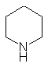

piperonal from pepper
 CAS: [110-89-4] piperidine [merck index] piperidin [roempp]
[merck index] THE MERCK INDEX on CD-ROM / Version 12:3 / 1999 [roempp] roempp lexikon chemie version 2.0, cd-rom, stuttgart / new york: georg thieme verlag 1999